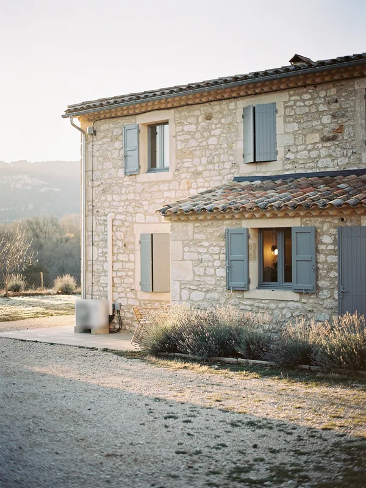
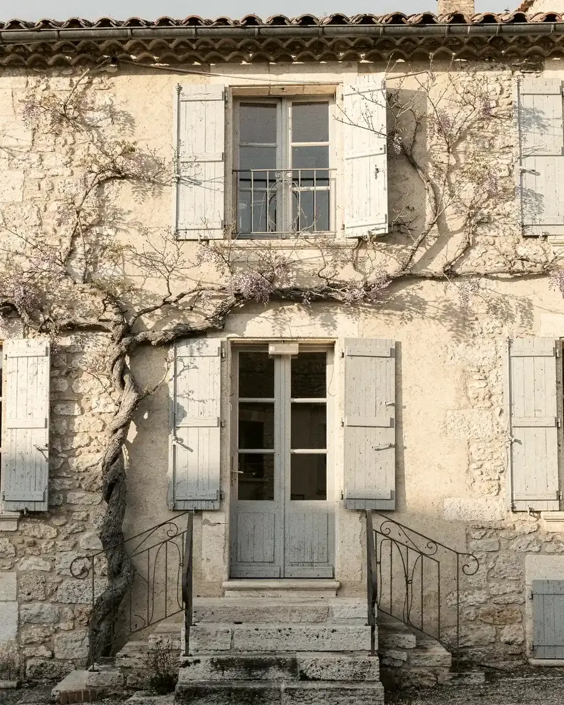
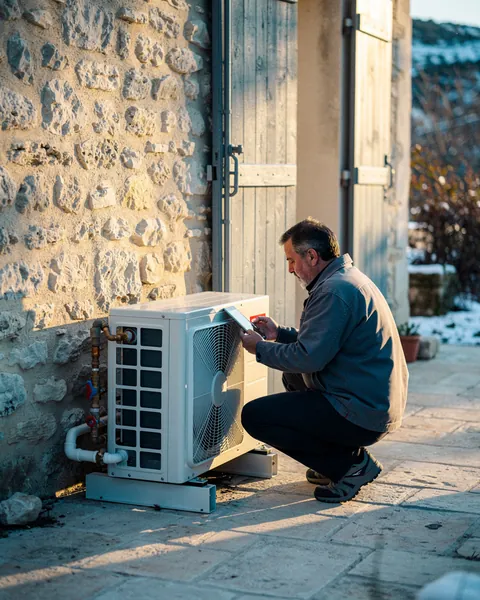
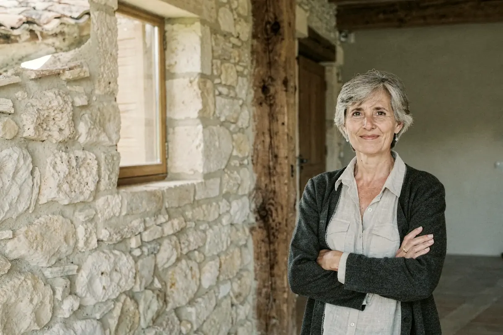

dès
Chauffez la maison avec l'air du Luberon.
Pompes à chaleur et chauffe-eau thermodynamiques, posés par une équipe RGE d'Apt.
Simuler mes économies
Dès 11 900 € posée, avant aides
412 maisons équipées

Maison Giraud · Gargas
pompe à chaleur posée en 2025
- Dehors
- 2,8 °C
- Séjour
- 20,1 °C
- Rendement
- × 3,4
Chaleur du jour 27,6 kWh
Coût du jour 2,04 €
412 maisons du Luberon chauffées à l'air
412
pompes à chaleur posées
4,8 / 5
sur 96 avis clients
48 h
pour vous rappeler
RGE QualiPACGarantie décennale
- Apt
- Saignon
- Gargas
- Roussillon
- Bonnieux
- Rustrel
- Goult
- Joucas
- Lacoste
- Viens
- Céreste
- Sault
Le trajet de la chaleur, du jardin au séjour
- L'unité extérieure prend la chaleur de l'airMême à −7 °C, l'air en contient.
- Le module la passe à l'eauDans le cellier, le circuit monte à 35 ou 45 °C.
- Plancher et radiateurs la diffusentVos radiateurs restent en place.
- Le ballon fait l'eau chaude200 litres chauffés par la pompe à chaleur.
Deux appareils, posés et entretenus par nous
Prix posés, TVA comprise, avant aides.
Votre maison, vos économies, vos aides
Estimation fictive.
Dix ans de factures, avant et aprèsDix ans de factures au chauffage actuel
Remboursée vers la septième année.
Énergie : +3 % par an. Entretien compris.
Voir le tableau
| Année | Avant | Après |
|---|

De la simulation au premier hiver au chaud
- Vous simulez
- Thomas vous rappelle
- On mesure chaque pièce
- Devis, aides déduites
- Mise en service
Quatre chauffagistes salariés, aucun sous-traitant
Thomas Reynaud a fondé Calorie en 2012, après dix ans de chaufferies à Cavaillon. Lui et son équipe entretiennent ce qu'ils ont posé.

Un hiver plus tard, ils ont fait le compte

« 2 300 € de fioul avant. Cet hiver, 1 150 € d'électricité. »
« Ils ont gardé nos radiateurs en fonte. Aucun mur à casser. »

« L'unité est derrière le mur du jardin. Le voisin ne l'entend pas. »
Les derniers chantiers, racontés
Ce qu'on nous demande à chaque visite
Ça chauffe quand il gèle ?
Oui, jusqu'à −20 °C.
Faut-il changer mes radiateurs ?
Rarement. On calcule chaque pièce à la visite et on ajoute un radiateur si besoin.
Et le bruit ?
Environ 40 dB à cinq mètres, comme un réfrigérateur.
Qui monte le dossier d'aides ?
Nous. Les aides sont déduites du devis.
Combien coûte l'entretien ?
180 € par an, offert la première année avec la PAC.
Une heure chez vous, puis un devis chiffré
- Thomas vous rappelle sous 48 h ouvrées.
- La visite est gratuite et sans engagement.